happening to one another
Omid's central research question delves into the potential of performance art for advancing social reform. Influenced by Bruguera's 'arte útil,' his practice aims to shift art's role from signaling problems to proposing and implementing solutions. He does that in so-called "performance sessions"; gatherings where people, regardless of their artistic background, engage in improvised, co-created moments. In this series of performance sessions at Goethe Institute in Rotterdam, during his residency program, he collaborated with 12 artists, performers, dancers, and individuals from various backgrounds, where they immersed themselves in 8-day performance sessions, centering on narratives of oppression and diverse definitions of liberation.
Performing without an audience transforms the medium into a space for dialogue between the bodies through touch as much as via language. Inspired by Boal's "Theater of the Oppressed", these sessions prioritized the quality of participant exchange, collectively delving into experiencing 'the experience.' Resembling rehearsal sessions, they differed in the objective: not to create a specific form, gesture, or story, but to rehearse to feel, to dare, and to perform without the fear of doing something wrong. The focus was on liberation through unrestricted improvisation, rejecting the constraints of predefined images or characters. "There is no script for social and cultural life," anthropologists Elizabeth Hallam and Tim Ingold (2007, p.1) wrote on the role that spontaneous acts of creativity might play in shaping notions of community and fostering new forms of social organization. The underlying idea is that improvised performances challenge assumptions ingrained in dominant knowledge systems.
Collaborators: Gab Branco, Claudia Ferrando, Daria Pugachova, Qiyun Zheng, Hosein Danesh, Rebecca Levy, Rojin Tavassoli, Peyman, Kim Zieschang, Vanessa Schaller, Julia Nielsen, Hana Kozma.
What would have happened if the documentation of these sessions were supposed to be seen by others? What could be the images one could imagine from 8 days of performing behind closed doors? In collaboration with Rotterdam-based artist Cem Altınöz, I asked him to create a video work in the same direction as his anti-portraiture practice. The violence, confusion, and multiple layers of images that were later mixed with the transcripts of some of the dialogues of these sessions, created a new reality for the images of these sessions. The video installation, in an ab-normal way, showcased some of the processes, and it was installed inside the vitrine space of the front facade of the Goethe Institute building in Westersingel in the center of Rotterdam.
This work includes three single-channel videos of different lengths and tempos. The first, over two and a half hours, is Cem's interpretation of these videos and what he could make up of the research process — free to give shape to imagery that reproduces oppression or liberation for him in an abstract way, a meeting place for the violence of an outside gaze on the presence of the performers. The second, a one-hour selection from 40 hours of transcripts, creates a new narrative by juxtaposing visuals and oral materials. On the right side of the installation, a one-channel, three-hour video consisted of documentation from a GoPro camera that recorded some of the exercises of both groups. Objects symbolizing oppression brought by participants are also part of the installation.
The installation remained continuously active for a month, welcoming public engagement.
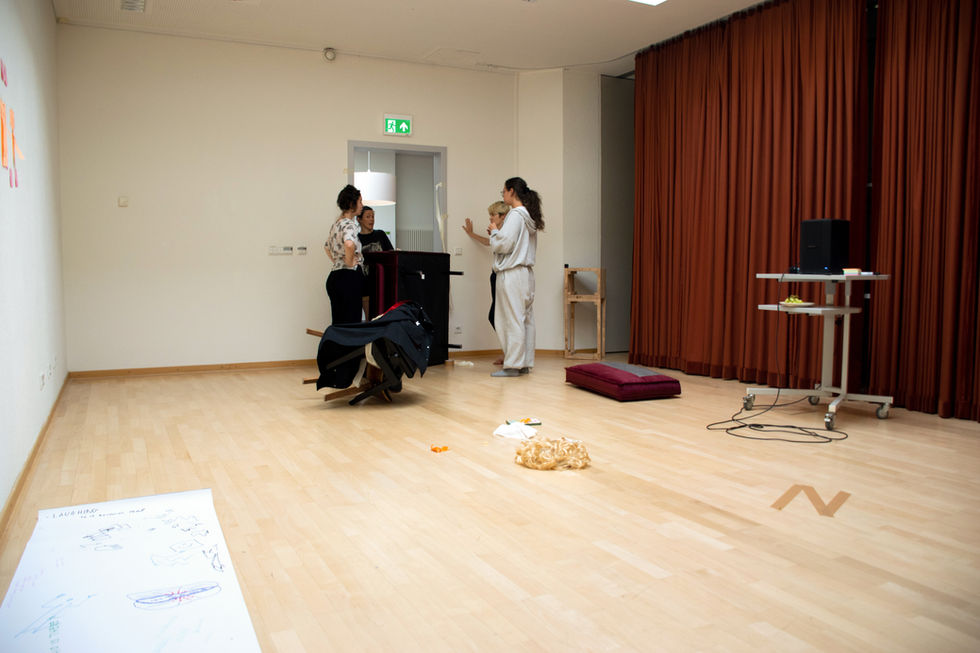
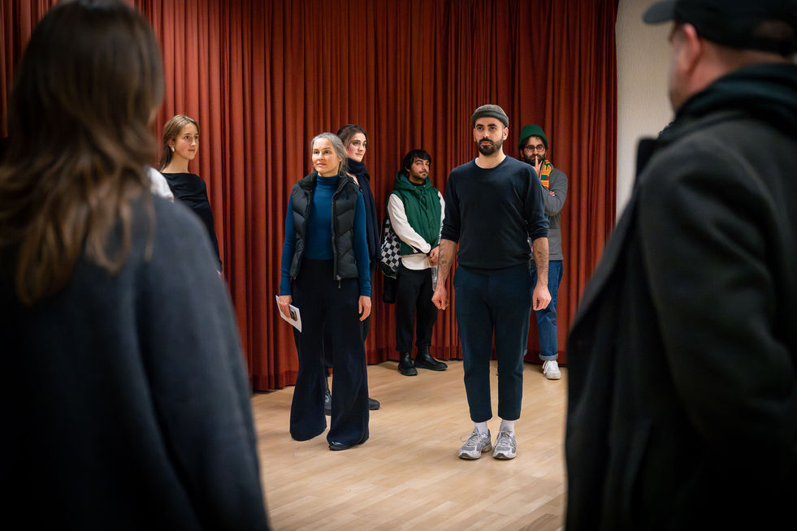
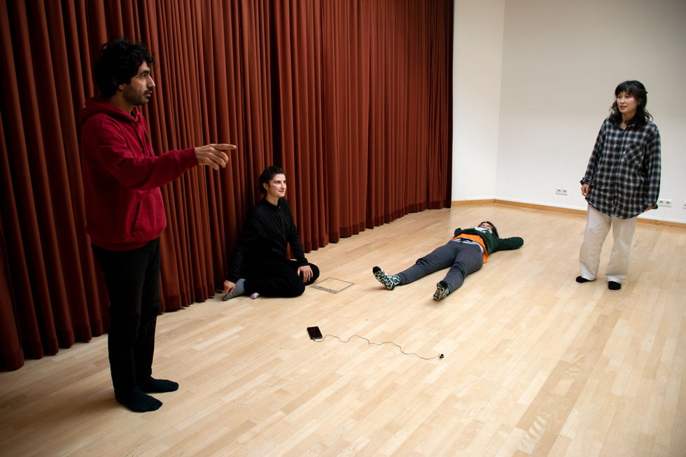
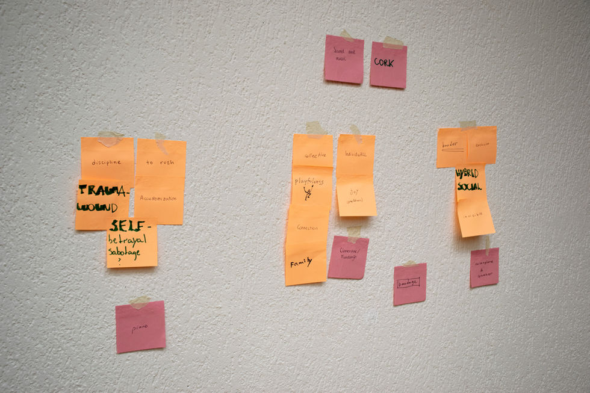
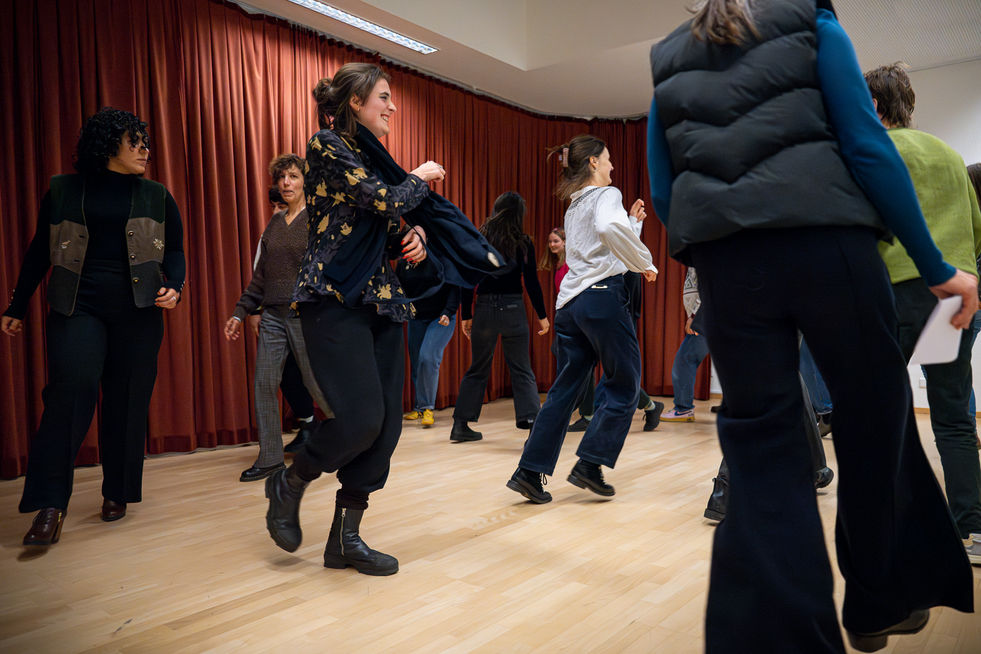
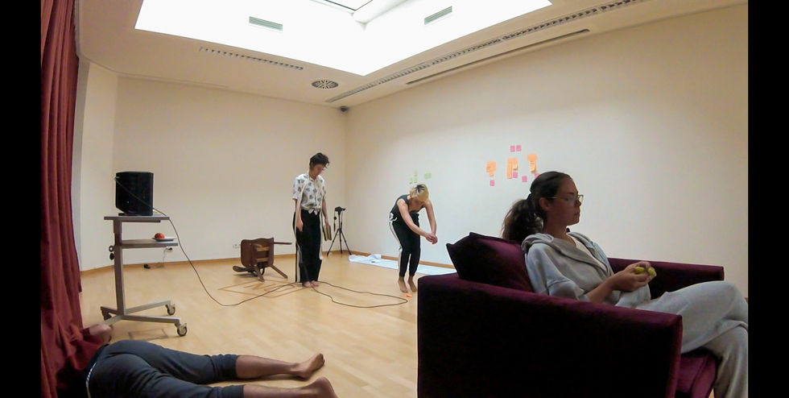
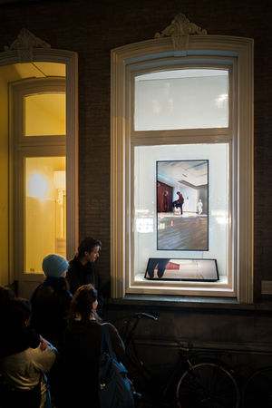
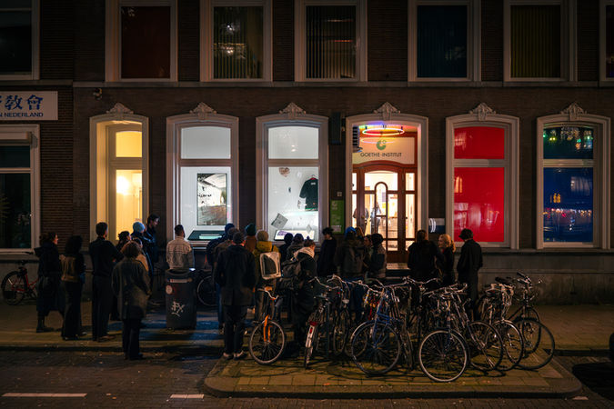
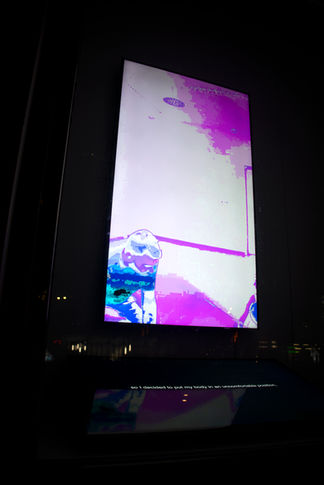
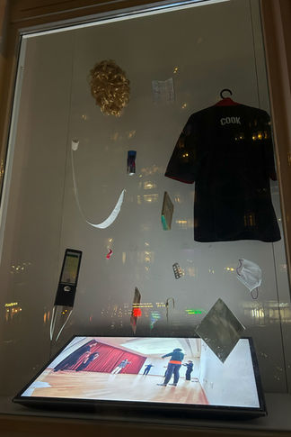
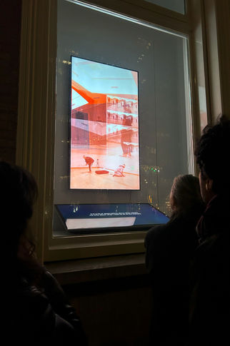